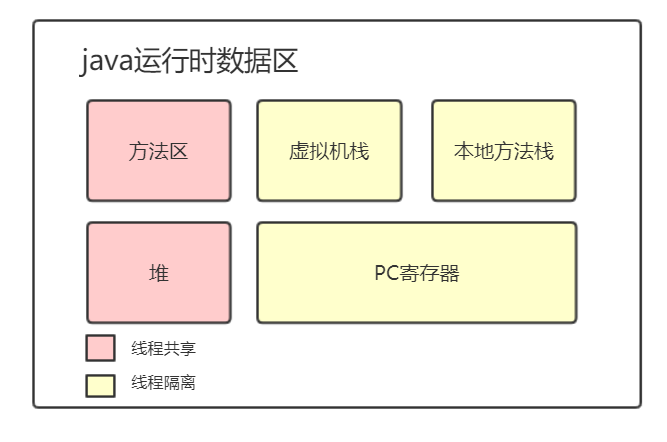

java运行时数据区

PC寄存器
java虚拟机可以支持多条线程同时执行，每一条java虚拟机线程都有自己的pc（program counter）寄存器。在任意时刻，一条java虚拟机线程只会执行一个方法的代码，这个正在被线程执行的方法称为该线程的当前方法。如果这个方法不是native的，那pc寄存器就保存java虚拟机正在执行的字节码指令的地址。如果该方法是native的，那么pc寄存器的值是undefined。
java虚拟机栈
每一条java虚拟机线程都有自己私有的java虚拟机栈，这个栈与线程同时创建，用于存储栈帧。栈帧可以在堆中分配，java虚拟机栈所使用的内存不需要保证是连续的。
- 如果线程请求分配的栈容量超过java虚拟机栈允许的最大容量，java虚拟机将会抛出一个StackOverflowError异常。
- 如果java虚拟机栈可以动态扩展，并且在尝试扩展的时候无法申请到足够的内存，或者在创建新的线程是没有足够的内存去创建对应的虚拟机栈，那么java虚拟机将会抛出一个OutOfMemoryError异常。
java堆
在java虚拟机中，堆（heap）是可供各个线程共享的运行时内存区域，也是供所有类实例和数组对象分配内存的区域。
java堆在虚拟机启动时创建，存储了被自动内存管理系统（即常说的垃圾收集器）所管理的各种对象，这些受管理的对象无需也无法显式地销毁。
- 如果实际所需的堆超过了自动内存管理系统能提供的最大容量，那java虚拟机将会抛出一个OutOfMemoryError异常。
方法区
各个线程共享，类似传统语言中的编译代码存储区或是操作系统进程的正文段的作用非常类似，存储了每一个类的结构信息，如，运行时常量池、字段和方法数据、构造函数和普通方法的字节码内容，还包括一些在类、实例、接口初始化时用到的特殊方法。
方法区在虚拟机启动时创建，虚拟机实现可以选择在这个区域不实现垃圾收集与压缩。方法区容量可以是固定的，也可以动态扩展。方法区在内存空间可以是不连续的。
- 如果方法区的内存空间不能满足内存分配请求，那么java虚拟机将抛出一个OutOfMemoryError异常。
运行时常量池
运行时常量池是class文件中每一个类或接口的常量池表的运行时表现形式，它包括了若干种不同的常量，从编译期可知的数值字面量到必须在运行期解析后才能获得的方法或字段引用。类似符号表，但是存储数据的范围比通常意义上的符号表要更加广泛。
每一个运行时常量池都在java虚拟机的方法区中分配，在加载类和接口道虚拟机后，就创建对应的运行时常量池。
- 当创建类或接口时，如果构造运行时常量池所需要的内存空间超过了方法区所能提供的最大值，那么Java虚拟机将会抛出一个Out0fMemoryError异常。
本地方法栈
本地方法用的栈。本地方法栈（NativeMethodstack）与虚拟机栈所发挥的作用是非常相似的，它们之间的区别不过是虚拟机栈为虚拟机执行Java方法（也就是字节码）服务，而本地方法栈则为虚拟机使用到的Native方法服务。在虚拟机规范中对本地方法栈中方法使用的语言、使用方式与数据结构并没有强制规定，因此具体的虚拟机可以自由实现它。甚至有的虚拟机（譬如sun Hotspot虚拟机）直接就把本地方法栈和虚拟机栈合二为一。与虚拟机栈一样，本地方法栈区域也会抛出StackOverflowError和OutOMemoryError异常。
栈帧
栈帧是用来存储数据和部分过程结构的数据结构，同时也用来处理动态链接、方法返回值和异常分派。
栈帧随着方法调用而创建，随着方法结束而销毁。每个栈帧都有自己的本地变量表、操作数占和指向当前方法所属的类的运行时常量池的引用。